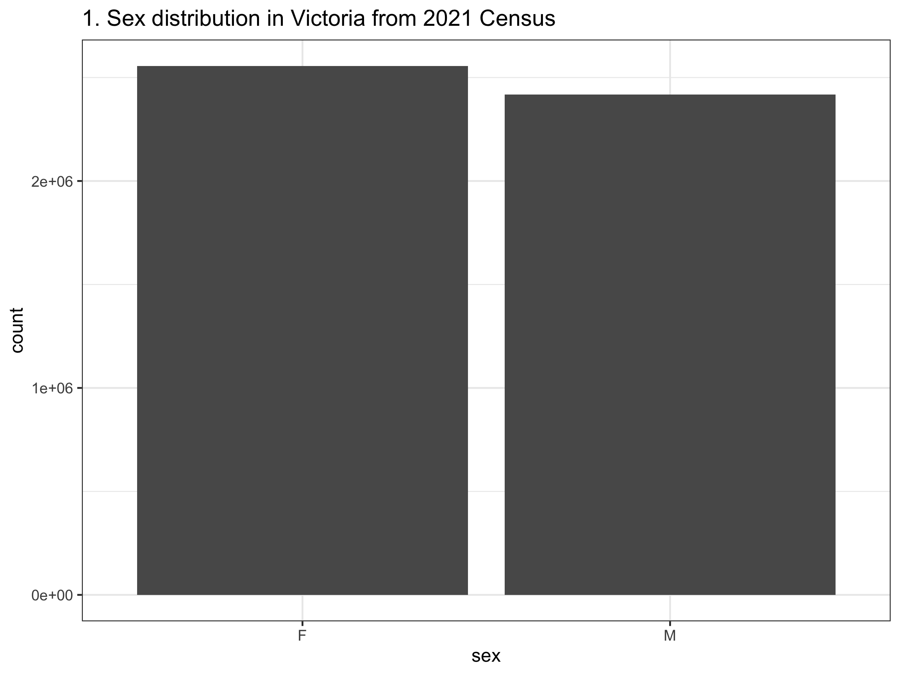
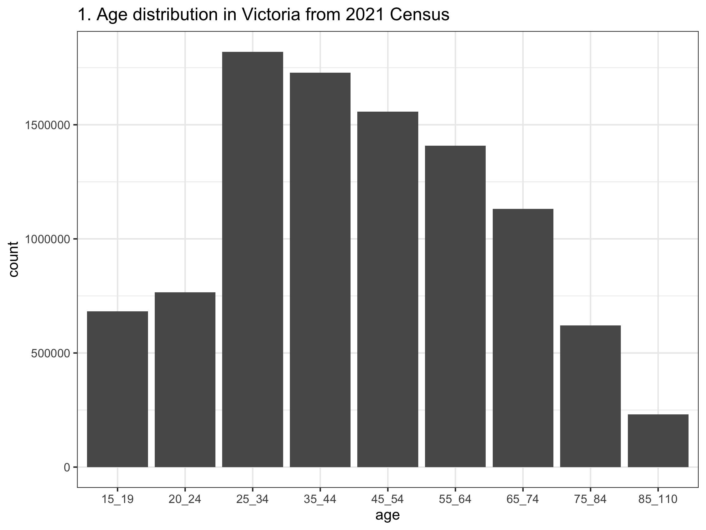
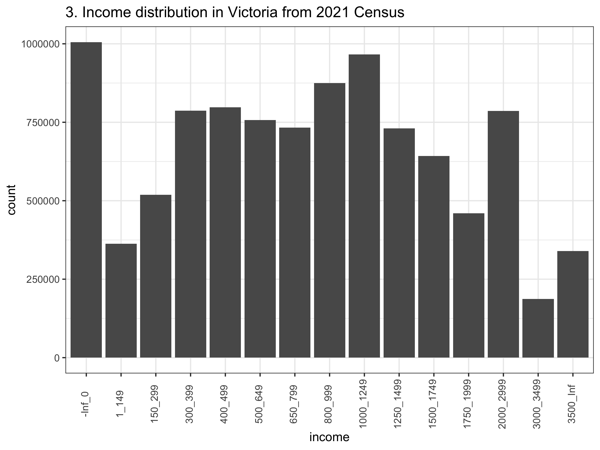
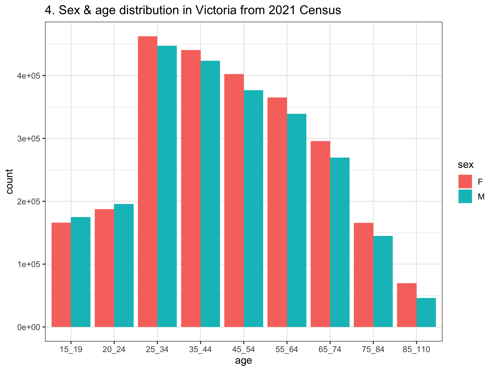
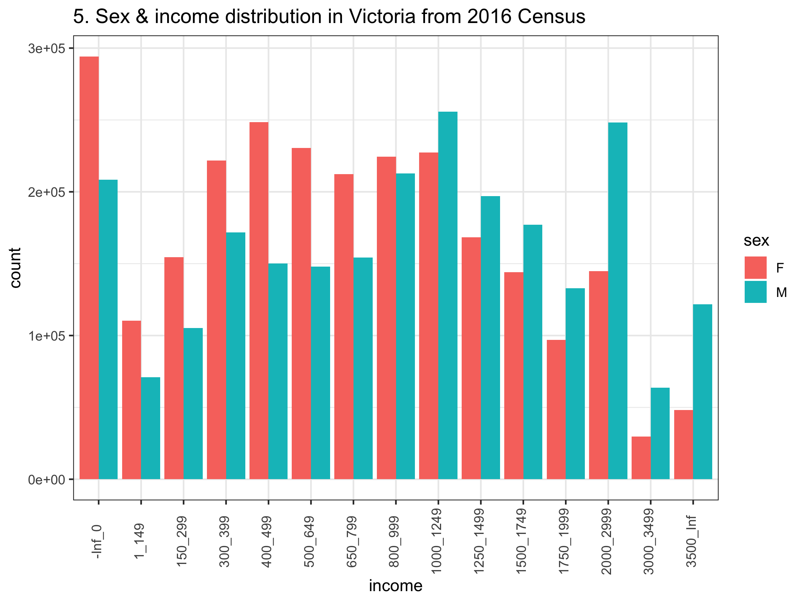
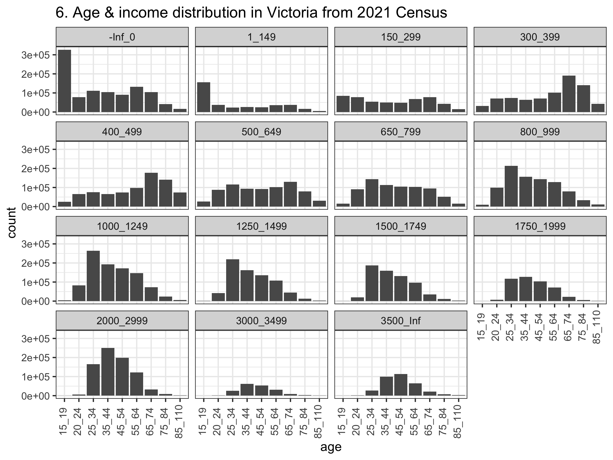

library(tidyverse)
# There is a function in the stats packages called filer - stats::filter
# We want our filter to be the one from the dplyr package - dplyr::filter
# We explictly define which `filter` we want here
filter <- dplyr::filter
# This doesn't stop us using the stats::filter
# We just need to call the function by specifying the package as well.Week 4 Tutorial
Tip
Sometimes two packages can contain the a function named the same thing. This can be confusing and create errors in your code. If you are worried about this, you can set which function you want to use as the default as shown below.
Exercise 1
A <- c("F_300_399_55_64_yrs",
"F_1_149_35_44_yrs",
"F_150_299_25_34_yrs",
"M_800_999_75_84_yrs",
"M_400_499_65_74_yrs")
B <- c(A,
"F_1_149_15_19_yrs",
"F_150_299_85ov",
"M_1500_1749_85ov",
"M_Neg_Nil_income_20_24_yrs",
"M_150_299_25_34_yrs")
B_copy <- B # for advanced solution
str_split(A, pattern = "_")[[1]]
[1] "F" "300" "399" "55" "64" "yrs"
[[2]]
[1] "F" "1" "149" "35" "44" "yrs"
[[3]]
[1] "F" "150" "299" "25" "34" "yrs"
[[4]]
[1] "M" "800" "999" "75" "84" "yrs"
[[5]]
[1] "M" "400" "499" "65" "74" "yrs"# Not exactly what we want
str_split(B, pattern = "_")[[1]]
[1] "F" "300" "399" "55" "64" "yrs"
[[2]]
[1] "F" "1" "149" "35" "44" "yrs"
[[3]]
[1] "F" "150" "299" "25" "34" "yrs"
[[4]]
[1] "M" "800" "999" "75" "84" "yrs"
[[5]]
[1] "M" "400" "499" "65" "74" "yrs"
[[6]]
[1] "F" "1" "149" "15" "19" "yrs"
[[7]]
[1] "F" "150" "299" "85ov"
[[8]]
[1] "M" "1500" "1749" "85ov"
[[9]]
[1] "M" "Neg" "Nil" "income" "20" "24" "yrs"
[[10]]
[1] "M" "150" "299" "25" "34" "yrs"# Massage the string into the right format first
B <- str_replace(B, "Neg_Nil", "-Inf_0")
B <- str_replace(B, "ov", "_110_yrs")
B <- str_remove(B, "_income")
# Now it's ready to split
str_split(B, pattern = "_")[[1]]
[1] "F" "300" "399" "55" "64" "yrs"
[[2]]
[1] "F" "1" "149" "35" "44" "yrs"
[[3]]
[1] "F" "150" "299" "25" "34" "yrs"
[[4]]
[1] "M" "800" "999" "75" "84" "yrs"
[[5]]
[1] "M" "400" "499" "65" "74" "yrs"
[[6]]
[1] "F" "1" "149" "15" "19" "yrs"
[[7]]
[1] "F" "150" "299" "85" "110" "yrs"
[[8]]
[1] "M" "1500" "1749" "85" "110" "yrs"
[[9]]
[1] "M" "-Inf" "0" "20" "24" "yrs"
[[10]]
[1] "M" "150" "299" "25" "34" "yrs"# ADVANCED SOLUTION:
# There are other ways to do this with regular expressions
data.frame(A = A) |>
extract(A, c("sex", "income_min", "income_max", "age_min", "age_max"), "([FM])_(\\d+)_(\\d+)_(\\d+)_(\\d+)_yrs") sex income_min income_max age_min age_max
1 F 300 399 55 64
2 F 1 149 35 44
3 F 150 299 25 34
4 M 800 999 75 84
5 M 400 499 65 74data.frame(B = B_copy) |>
mutate(B = str_replace(B, "Neg_Nil_income", "-Inf_0"),
B = str_replace(B, "85ov", "85_110_yrs")) |>
extract(B, c("sex", "income_min", "income_max", "age_min", "age_max"), "([FM])_(\\d+|\\-Inf)_(\\d+)_(\\d+)_(\\d+)_yrs") sex income_min income_max age_min age_max
1 F 300 399 55 64
2 F 1 149 35 44
3 F 150 299 25 34
4 M 800 999 75 84
5 M 400 499 65 74
6 F 1 149 15 19
7 F 150 299 85 110
8 M 1500 1749 85 110
9 M -Inf 0 20 24
10 M 150 299 25 34Exercise 2
# Set the paths to the data
# Remeber to use here::here you must define a project first!
census_path <- here::here("data/2021_GCP_all_for_VIC_short-header/2021 Census GCP All Geographies for VIC/")
SA1_paths <- glue::glue(census_path, "{geo}/VIC/2021Census_G17{alpha}_VIC_{geo}.csv",
geo = "SA1", alpha = c("A", "B", "C"))
STE_paths <- glue::glue(census_path, "{geo}/VIC/2021Census_G17{alpha}_VIC_{geo}.csv",
geo = "STE", alpha = c("A", "B", "C"))data_paths = STE_paths
# Read in each of the three tables
tbl_G17A <- read_csv(data_paths[1])
tbl_G17B <- read_csv(data_paths[2])
tbl_G17C <- read_csv(data_paths[3])
# Combine all the data together
tbl_G17 <- bind_rows(tbl_G17A, tbl_G17B, tbl_G17C)
dim(tbl_G17) # gives dimensions of the new dataset[1] 3 511# Change the format of the table to make it longer instead of wider
# This is a step closer to a tidy format
tbl_G17_long <- tbl_G17 |>
pivot_longer(cols = -1, names_to = "category",
values_to = "count")
# View(tbl_G17_long)
# We want to split the strings using the "_"
# But there are multiple different cases to consider
# There are at least 5 cases we'll need to code for
underscore_count_per_category = str_count(
string = tbl_G17_long$category, pattern = "_")
table(underscore_count_per_category)underscore_count_per_category
2 3 4 5 6
18 252 90 1017 153 # What are the weird cases?
# Can look in the meta data / names / to help identify
# 1) Neg_Nil_income --> change to -Inf_0
# 1*) Negtve_Nil_income --> change to -Inf_0
# 2) more --> Inf
# 3) PI_NS --> NA_NA
# 4) 85ov --> 85_110
# 4*) 85_yrs_ov --> 85_110
# Use this code to explore the different sub cases we are going to need to code for
pattern_val = "ov" #Neg, Negtve, more, PI, ov, 85ov, 85_yrs
# View(tbl_G17_long |> filter(str_detect(category, pattern_val)))
# Lots can go wrong in string matching
# You need to be very very precise in what you ask for
tbl_G17_long_formatted <- tbl_G17_long |>
filter(!str_detect(string = category, pattern = "Tot"),
!str_detect(category, "PI_NS")) |>
mutate(
category = str_replace(category, "Neg_Nil_income", "-Inf_0"),
category = str_replace(category, "Neg_Nil_incme", "-Inf_0"),
category = str_replace(category, "Negtve_Nil_incme", "-Inf_0"),
category = str_replace(category, "more", "Inf"),
category = str_replace(category, "85ov", "85_110_yrs"),
category = str_replace(category, "85_yrs_ovr", "85_110_yrs"))
# seems like they are all have the same number of underscores now
underscore_count_per_category = str_count(tbl_G17_long_formatted$category,
pattern = "_")
table(underscore_count_per_category)underscore_count_per_category
5
1215 # The data can be converted to the tidy format
tbl_G17_tidy <- tbl_G17_long_formatted |>
mutate(category = str_remove(category, "_yrs")) |>
separate_wider_delim(cols = category, delim = "_",
names = c("sex", "income_min", "income_max", "age_min", "age_max")) |>
unite("income", c(income_min, income_max), remove = FALSE) |>
unite("age", c(age_min, age_max), remove = FALSE)
# View(tbl_G17_tidy)
tbl_G17_tidy_STE = tbl_G17_tidy- There are 1 row and 201 columns.
- We use the
str_removecall to get rid of_yrsotherwise we would end up with an extra column we don’t need.
To repeat this for the SA1 regions, you just need to change the following line of code.
data_paths = SA1_paths ## This line here to set the right path
tbl_G17A <- read_csv(data_paths[1])
tbl_G17B <- read_csv(data_paths[2])
tbl_G17C <- read_csv(data_paths[3])
tbl_G17 <- bind_rows(tbl_G17A, tbl_G17B, tbl_G17C)
tbl_G17_long <- tbl_G17 |>
pivot_longer(cols = -1, names_to = "category",
values_to = "count")
### WARNING: This takes a long time - there is a lot of data!
tbl_G17_long_formatted <- tbl_G17_long |>
filter(!str_detect(string = category, pattern = "Tot"),
!str_detect(category, "PI_NS")) |>
mutate(
category = str_replace(category, "Neg_Nil_income", "-Inf_0"),
category = str_replace(category, "Neg_Nil_incme", "-Inf_0"),
category = str_replace(category, "Negtve_Nil_incme", "-Inf_0"),
category = str_replace(category, "more", "Inf"),
category = str_replace(category, "85ov", "85_110_yrs"),
category = str_replace(category, "85_yrs_ovr", "85_110_yrs"))
tbl_G17_tidy <- tbl_G17_long_formatted |>
mutate(category = str_remove(category, "_yrs")) |>
separate_wider_delim(cols = category, delim = "_",
names = c("sex", "income_min", "income_max", "age_min", "age_max")) |>
unite("income", c(income_min, income_max), remove = FALSE) |>
unite("age", c(age_min, age_max), remove = FALSE)
tbl_G17_tidy_SA1 = tbl_G17_tidyAs you get more advanced in coding, you can learn to wrap all this code in a function so you don’t need to copy and paste the same code from above.
Exercise 3
vic_pop_sizes_STE <- tbl_G17_tidy_STE |>
filter(sex == "P") |>
pull(count)
vic_pop_sizes_SA1 <- tbl_G17_tidy_STE |>
filter(sex == "P") |>
pull(count)
total_vic_pop_sizes = data.frame(
STE = vic_pop_sizes_STE |> sum(na.rm = TRUE) ,
SA1 = vic_pop_sizes_SA1 |> sum(na.rm = TRUE))- If we use the
STEdata, we have 4.973795^{6} people over 15 years old but inSA1data, we have 4.973795^{6}. The difference of 0 is 0, but you will find differences if you repeat this analysis for 2016.
It is actual quite common to find small differences between totals for different regions. This can likely attributed to the small random adjustments to the counts (for confidentiality). In particular, SA1 represents a smaller regions, so a bigger risk individuals could be identified. It is not surprising then that there will be more adjustments made to SA1 data.
The STE data is aggregated at state level so it would more accurately reflect the true number of people over 15 years old. This does not reflect the total population in Victoria, however, as it does not account for those under 15 years old. The population size by age in Victoria from 2021 census can be found here.
- The minimum and maximum values of
countis 66 and 1.63348^{5} (for STE, or for SA1 66 and 1.63348^{5}).
Exercise 4
- Before drawing the boxplots, we’ll just wrangle the data to remove the redundant rows and make labels that are more pretty for the graph. You could also consider merging the 15-19 and 20-24 years old together so that the range is the same as other categories (except the one over 85 years old). The code and output are all shown below. There are a number of things you may notice from the graphs, such as, there are more females than males in almost all age groups in Victoria; higher income earners are still male dominant (even in younger age groups); females do appear to live longer.
tbl_G17_tidy = tbl_G17_tidy_STE
# For plotting (so the labels appear in the right order on the axis)
# Try with and without this line to spot the difference
tbl_G17_tidy$income <- fct_reorder(tbl_G17_tidy$income,
as.numeric(tbl_G17_tidy$income_min))
tbl_G17_tidy |>
filter(sex != "P") |>
group_by(sex) |>
summarise(count = sum(count, na.rm = TRUE)) |>
ggplot() +
geom_col(aes(x = sex, y = count)) +
ggtitle("1. Sex distribution in Victoria from 2021 Census") +
theme_bw(base_size = 12)
tbl_G17_tidy |>
group_by(age) |>
summarise(count = sum(count, na.rm = TRUE)) |>
ggplot() +
geom_col(aes(x = age, y = count)) +
ggtitle("1. Age distribution in Victoria from 2021 Census") +
theme_bw(base_size = 12)
tbl_G17_tidy |>
group_by(income) |>
summarise(count = sum(count, na.rm = TRUE)) |>
ggplot() +
geom_col(aes(x = income, y = count)) +
ggtitle("3. Income distribution in Victoria from 2021 Census") +
theme_bw(base_size = 12) +
theme(axis.text.x = element_text(angle = 90, vjust = 0.3))
tbl_G17_tidy |>
filter(sex != "P") |>
group_by(sex, age) |>
summarise(count = sum(count, na.rm = TRUE)) |>
ggplot() +
geom_col(aes(x = age, y = count, fill = sex), position = "dodge") +
ggtitle("4. Sex & age distribution in Victoria from 2021 Census") +
theme_bw(base_size = 12)
tbl_G17_tidy |>
filter(sex != "P") |>
group_by(sex, income) |>
summarise(count = sum(count, na.rm = TRUE)) |>
ggplot() +
geom_col(aes(x = income, y = count, fill = sex), position = "dodge") +
ggtitle("5. Sex & income distribution in Victoria from 2016 Census") +
theme_bw(base_size = 12) +
theme(axis.text.x = element_text(angle = 90, vjust = 0.3))
tbl_G17_tidy |>
group_by(age, income) |>
summarise(count = sum(count, na.rm = TRUE)) |>
ggplot() +
geom_col(aes(x = age, y = count), position = "dodge") +
facet_wrap(~income) +
ggtitle("6. Age & income distribution in Victoria from 2021 Census") +
theme_bw(base_size = 12) +
theme(axis.text.x = element_text(angle = 90, vjust = 0.3))
tbl_G17_tidy |>
filter(sex != "P") |>
ggplot(aes(x = age, y = count, fill = sex)) +
geom_col(position = "dodge") +
facet_wrap(~income) +
theme_bw(base_size = 12) +
theme(axis.text.x = element_text(angle = 90, vjust = 0.3)) +
ggtitle("7. Income, sex & age distribution in Victoria from 2021 Census")
- Answering these questions was definitely easier because we made our data tidy!
Exercise 5
We will use the STE data to extract the relevant statistics.
n_women_15_54 <- tbl_G17_tidy_STE |>
filter(age_min >=15 & age_max <= 54 & sex == "F") |>
pull(count) |>
sum(na.rm = TRUE)
n_people_25_34_earn_1750_or_more <- tbl_G17_tidy_STE |>
filter(age_min >=25 & age_max <= 34 & sex == "P" & income_min >= 1750) |>
pull(count) |>
sum(na.rm = TRUE)
n_man_25_44 <- tbl_G17_tidy_STE |>
filter(age_min >=25 & age_max <= 44 & sex == "M") |>
pull(count) |>
sum(na.rm = TRUE)
n_man_25_44_earn_1500_or_less <- tbl_G17_tidy_STE |>
filter(age_min >=25 & age_max <= 44 & sex == "M" & income_max <= 1500) |>
pull(count) |>
sum(na.rm = TRUE)
n_vic = total_vic_pop_sizes$STEAccording to the 2021 Census data:
There are 1.729024^{6} women in Victoria are aged between 15-54 years old.
The proportion of people in Victoria that are 25-34 years old (inclusive) and earn $1750 or more per week is 0.1146752.
If I randomly select a man from all the men aged 25-44 years old in Victoria, the probability that the man I selected earns less than $1500 per week is 0.2885572.